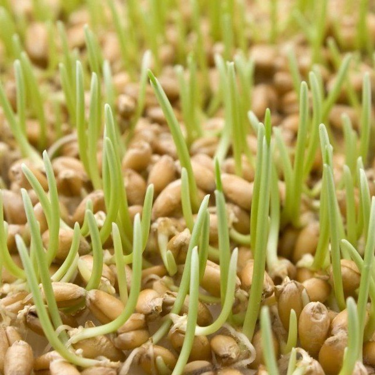

Look, this is my first page
Illarionov Dmitry
Мой телеграмм канал

Принимаем заказы на микрозелень🌿 и проростки🌱
в Нижнем Новгороде
Микозелень - это молодые растения привычных нам культур
(редиса, рукколы, люцерны, горчицы, подсолнечника и т.д.),
которые собирают уже через 7-10 дней после прорастания